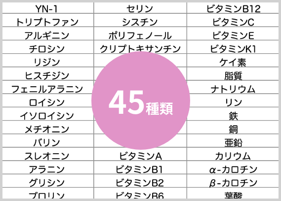

女性らしさを取り戻す
誰でもできる
江戸時代から伝わる「門外不出の薬草」が
突然ですが
最近こんな悩みないですか？
- 寝起きが辛い
- 落ち込んだりイライラすることがある
- たっぷり睡眠しても疲れを感じることがある
- ここぞという時に踏ん張りが効かない
私もいつからか疲れを感じることが増えて
ついうとうとしたくなることも
自宅だけではなく外出先でも
無意識にため息が出てるらしく
家族からも
「ため息多くない?」とも言われ
体重も増えるし肌の調子がイマイチで
ダルさを感じることあったけど
自分がそんなに疲れてるとは
ショックでした・・・
と言っても
高いコスメも買うし食事も気をつけている。
たまにはウォーキングもしてカラダを動かしてるのに、
ふだんと変わらない・・・
「このままくたびれた
おばさんになりたくない…」
やや諦めた気持ちで過ごしているとき、
驚きの話を知ったんです！
日々の疲れやダルさが
なかなかとれない理由は
先日メーカーの研究所で働く親戚から
こんな話しを聞きました。
加齢とともに40代以降からは毒素ともいえる
老廃物
を排出する力が衰えてくるとか。。
もっと詳しく話を聞くと、
そんな問題をサポートしてくれる薬草があり、
健康と美容の意識が高い人たちで
密かに話題になっているとのこと
その歴史は古く天孫降臨のイザナミイザナギ伝説で
知られる高千穂山系でしか育たない
「神の草」と言
われるほど。
日本山人参とも呼ばれています。
高千穂と言えば
日本でも有数な神聖なスポット
高千穂郷の山間部の限られた地域だけに自生する
ヒュウガトウキは希少性が高く、
野生のヒュウガトウキは絶滅危 惧種に指定されています。
つまり神聖な山奥に育まれてきた
古来から伝わる薬草なんです
このヒュウガトウキは密かに
一流の女優や世界的な演奏家など
美容や健康に気を付けてる著名人が
長年愛用しているんです!
「神の草」の
ヒュウガトウキは秘薬!
ヒュウガトウキは江戸時代から
島津家の薩摩藩で「神の草」と呼ばれ、
様々な難病を治癒したことから
秘薬として珍重されてきました。
そのため
大河ドラマでもお馴染み
篤姫の父上である島津公が門外不出にするほど
実はあらためて発見されたのは
昭和の後半になってから。
ヒュウガトウキって何がすごいの?
調べてみた結果、
体内の老廃物を排出する成分
YN-1が含まれているから
ヒュウガトウキに含まれる成分のYN-1(イソエポ キシプテリキシン)」には、過剰な栄養素や老廃 物・毒素、筋肉疲労物質などの有害物質の排泄を促進し、体内への蓄積を防ぎ、消化や代謝を活性化させる働きがあります。
つまり…
元気や美容に悪影響を及ぼす老廃物を
取り除いてくれる貴重な成分
だから、女性らしさが失われる
40代以降の女性のカラダを整える働きを
強力にサポートしてくれるのです
活力や美容の悪影響になる老廃物を
どんどん排出！
ヒュウガトウキを摂取している人の
口コミをチェックしてみると大絶賛の声が!
他の口コミも同じような
驚異的な体験ばかり
みんな同じような問題を抱えている人が多いのですが、
その原因は…
40代から急激に
排出機能を支える女性らしさが
低下するから
40代、50代になるつれカラダや心が
不安定になるのはそのため
イライラ・くよくよ・息切れ
などは不調のサインです
さらに新事実！
50代女性については
72%
が気力や体力に
問題を抱えているとわかりました。
多くの女性が何からの問題を抱えながら
毎日を過ごしているんです
毒素である老廃物が
体内にたまって不調を招きがち。
だから「出す力」を強化できるヒュウガトウキの
YN-1が注目されているんです
でもヒュウガトウキがすごいのは
それだけじゃないんです
ヒュウガトウキは
嬉しいサポート成分が豊富
ヒュウガトウキは他にも
優れた栄養成分が数多く含まれています
体内で十分な量が生成できない
必須アミノ酸やポリ
フェノールなどの
すぐれた健康成分を含みます。
しかもトリプトファンは
睡眠の質の向上させるのに欠かせない成分！
寝つきが悪くて疲れがとれない人を
サポートしてくれます。
他にも嬉しいサポート成分が多数！

一説には栄養成分が
45種類もあるとか
こんなにたくさんの成分を摂取できるて
さすが「神の草」…
薬草として重宝されてきたのもうなずけます
ヒュウガトウキを摂取するなら
サプリがオススメ!
そんな希少性が高くて
女性の「神の草」ヒュウガトウキ。
これを摂取するにはどうすれば
いいのか気になりますよね?
結論から言うと、
ヒュウガトウキを摂取するなら
サプリがオススメです！
ヒュウガトウキは葉の部分を摂取するのですが、
最もその成分を損なわずに摂取するためには
熱したり蒸したりしないこと
そこでオススメは葉っぱを
すりつぶしただけの混じりっけのない
天然100%サプリ！
- 必要なのはお水だけ
忙しいときでもいつでも飲める - 味にクセがないので
続けやすい - 携行できるから
旅行先や外出先でもお手軽
あとはお気に入りのサプリを探すだけ！
「探すの大変だしどれが
オススメなのか知りたい！」
という方へ朗報！
高品質でお得な
ヒュウガトウキサプリを見つけました！

ヒュウガトウキサプリでオススメは
AMATERS(アマテラス)！

-
希少性の高いヒュウガトウキを厳選。
国産で天然 100%の葉っぱのみを使用。 - 良い成分が多く含まれている
秋の熟成葉を100%使用 - 契約農家で無農薬栽培。
安全国内のGMP指定工場からお届け
愛用者の声をみても
「飲めばわかる！」
「アマテラスのおかげ！」
と高評価ばかり
高品質なヒュウガトウキと製造方法に
こだわっているのが高評価になっているんです
そしてアマテラスは厳選したヒュウガトウキを
丁寧な工程で1つ1つ丁寧に製造しています。
安心して続けられるのもポイントですね！
でも気になるのがお値段…
というのもヒュウガトウキは
希少性が高く著名人も買い集めてる薬草のため、
サプリでもけっこう高い値段で
販売されていることが多いんです…
人気ショッピングモールでも
7000円販売されていることも…
でもアマテラスは
お得な特別価格がで買えるみたい！
30日分120粒
通常価格 3,980円(税込)
1粒あたり
26%OFF

しかもアンケートはたったの3問のみ！
初めてヒュウガトウキを試したい人にはピッタリ！
7000円ぐらいで売っている商品なのに
お得すぎませんか？
しかも送料無料
支払い方法も選べて
自分に合った方法でお買い物できます
通販が不慣れな方でも安心
毎月50名様限定
アンケートキャンペーンは
いつまでやっているかわからないので
早めにチェックしてみてください
追記
心がよどみ腰が重かった私も
元気な頃のワクワクドキドキを
取り戻すことができました
年齢からくる悩みに負けない！
って思わせてくれたアマテラスにも感謝！
皆さんにもこの感動を味わってほしいです
きっと「早く出会いたかった！」と思えるはずです